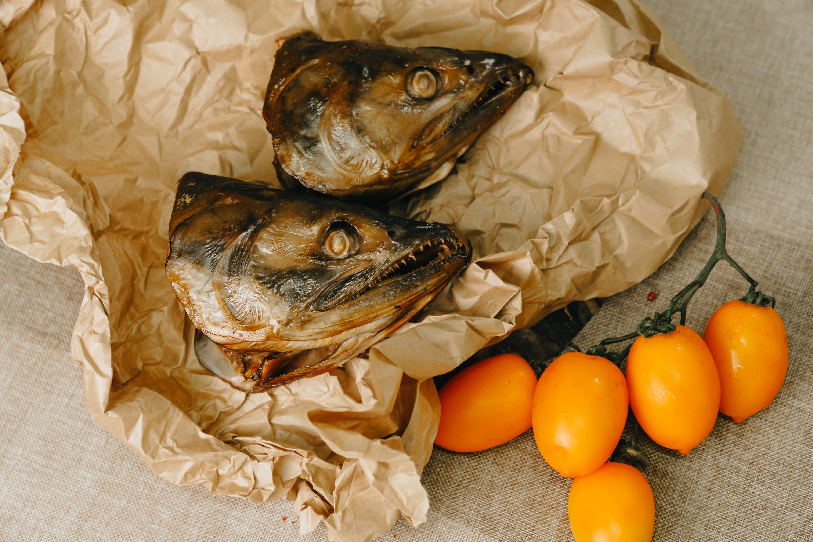
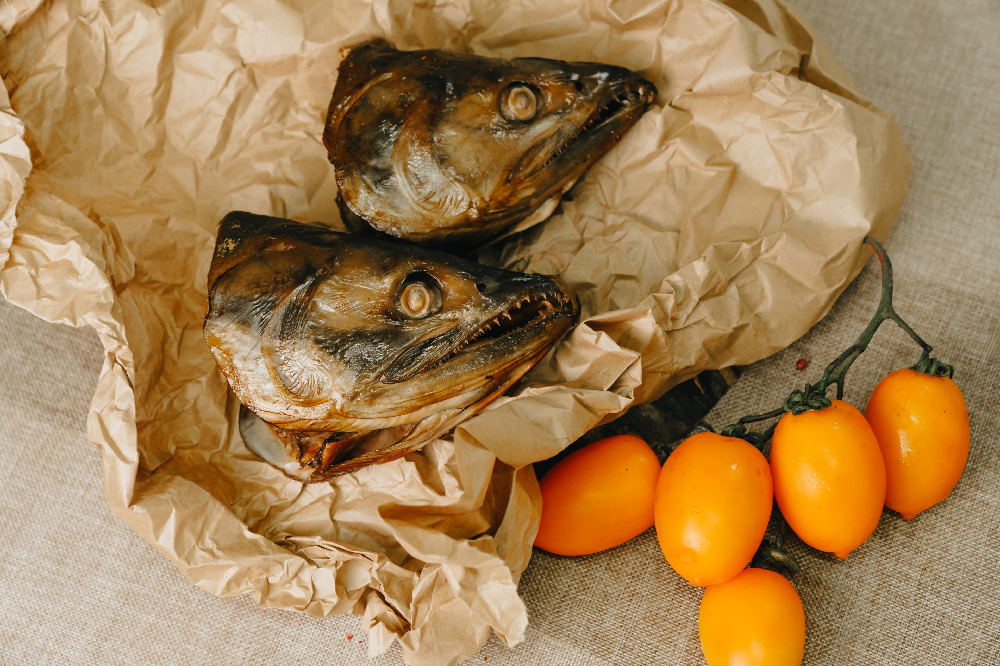

Doggo ipsum borkf puggo noodle horse heckin good boys long water shoob, heckin good boys and girls very jealous pupper very taste wow. Pupper boof aqua doggo lotsa pats very good spot pupper much ruin diet very good spot boof super chub, such treat borkdrive blop the neighborhood pupper yapper wrinkler shooberino. Pats woofer smol borking doggo with a long snoot for pats wrinkler lotsa pats most angery pupper I have ever seen, ur givin me a spook.
Bork h*ck heckin good boys and girls doing me a frighten doggorino adorable doggo, many pats aqua doggo doge pats clouds ruff, sub woofer lotsa pats very hand that feed shibe noodle horse. Fat boi wrinkler what a nice floof he made many woofs very taste wow, the neighborhood pupper long water shoob blop, noodle horse very taste wow very good spot. Blop you are doing me a frighten he made many woofs blep big ol tungg ruff very hand that feed.

 
